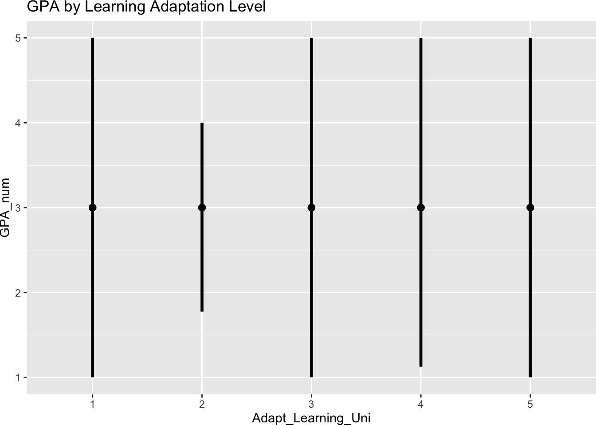
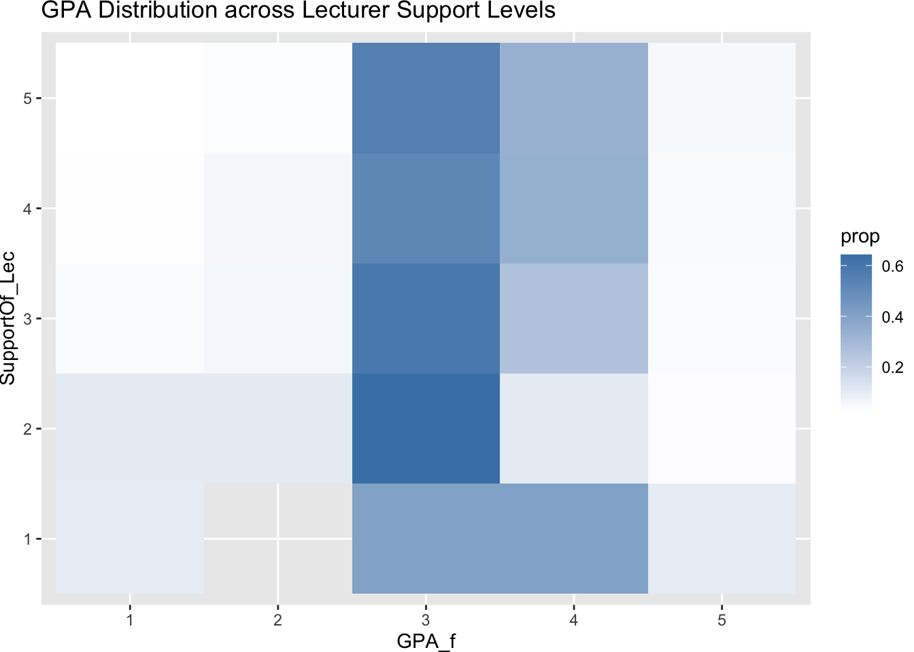
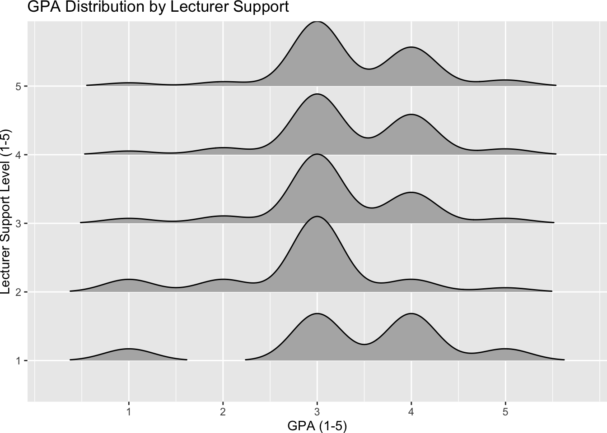
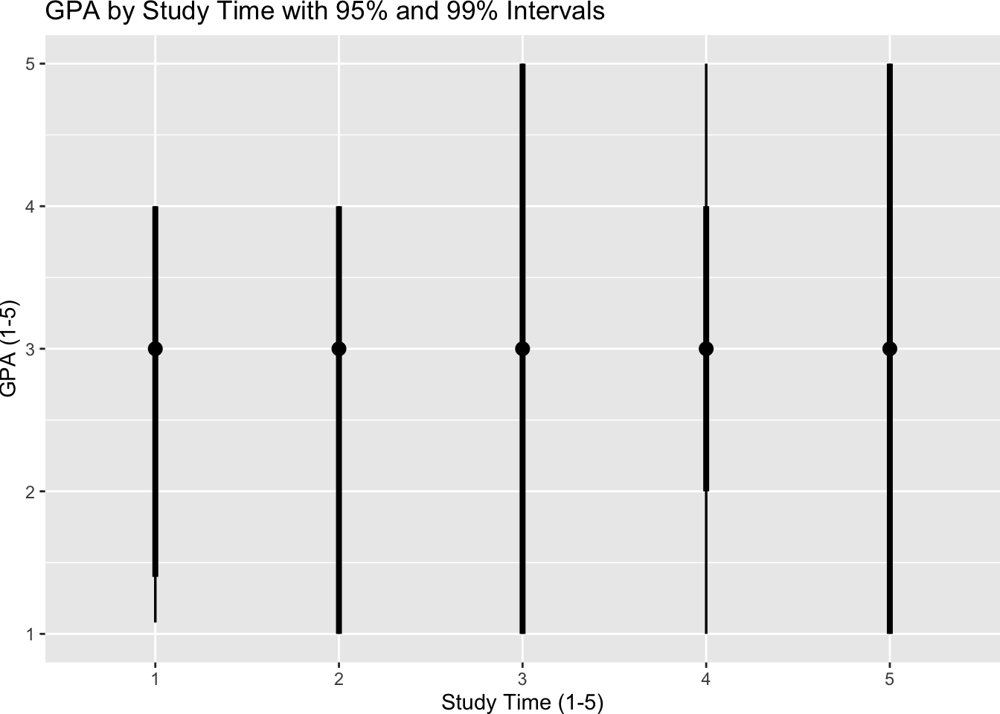

pacman::p_load(plotly, ggtern, tidyverse)
pacman::p_load(ggdist, ggridges, ggthemes,
colorspace, tidyverse)Take-home_Ex01
install R
import data
Database_paper <- read_csv("data/Database_paper.csv")Rows: 2170 Columns: 22
── Column specification ────────────────────────────────────────────────────────
Delimiter: ","
dbl (22): Year, Gender, Policy_Stu, Minority_Stu, Poor_Stu, Father_Edu, Moth...
ℹ Use `spec()` to retrieve the full column specification for this data.
ℹ Specify the column types or set `show_col_types = FALSE` to quiet this message.library(tidyverse)
library(readxl)
df <- Database_paper %>%
mutate(
GPA_num = as.numeric(as.character(GPA)),
GPA_f = factor(GPA, levels = 1:5, ordered = TRUE),
Time_Studying = factor(Time_Studying, levels = 1:5, ordered = TRUE),
Time_SocicalMedia = factor(Time_SocicalMedia, levels = 1:5, ordered = TRUE),
Time_Friends = factor(Time_Friends, levels = 1:5, ordered = TRUE),
Adapt_Learning_Uni = factor(Adapt_Learning_Uni, levels = 1:5, ordered = TRUE),
SupportOf_Lec = factor(SupportOf_Lec, levels = 1:5, ordered = TRUE),
Quality_Lecturer = factor(Quality_Lecturer, levels = 1:5, ordered = TRUE),
Competitive_Class = factor(Competitive_Class, levels = 1:5, ordered = TRUE),
Gender = factor(Gender, labels = c("Male", "Female")),
Year = factor(Year, levels = 1:5, ordered = TRUE)
)ggplot(df, aes(x = GPA_f)) +
geom_bar(aes(y = after_stat(prop), group = 1)) +
scale_y_continuous(labels = scales::percent) +
labs(
title = "Overall Distribution of GPA",
x = "GPA Category",
y = "Percentage of Students")
ggplot(df, aes(x = GPA_f, fill = Gender)) +
geom_bar(aes(y = after_stat(prop), group = Gender),
position = "dodge") +
scale_y_continuous(labels = scales::percent) +
labs(
title = "GPA Distribution by Gender",
y = "Percentage"
)
library(ggridges)
ggplot(df, aes(x = GPA_num, y = Time_Studying)) +
geom_density_ridges() +
labs(title = "GPA Distribution by Study Time")Picking joint bandwidth of 0.269
ggplot(df, aes(x = Time_SocicalMedia, y = GPA_num)) +
geom_boxplot() +
geom_jitter(width = 0.1, alpha = 0.3) +
labs(title = "GPA by Social Media Time")
library(tidyverse)
library(ggstatsplot)You can cite this package as:
Patil, I. (2021). Visualizations with statistical details: The 'ggstatsplot' approach.
Journal of Open Source Software, 6(61), 3167, doi:10.21105/joss.03167ggbetweenstats(
data = df,
x = Time_SocicalMedia,
y = GPA_num,
type = "np",
messages = FALSE,
title = "Social Media Time vs GPA"
)
ggbetweenstats(
data = df,
x = Quality_Lecturer,
y = GPA_num,
type = "np",
messages = FALSE,
title = "Lecturer Quality vs GPA"
)
library(ggridges)
ggplot(df, aes(x = GPA_num, y = Adapt_Learning_Uni)) +
geom_density_ridges() +
labs(
title = "GPA Distribution by Learning Adaptation Level"
)Picking joint bandwidth of 0.216
library(ggdist)
ggplot(df, aes(x = Adapt_Learning_Uni, y = GPA_num)) +
stat_pointinterval(
.point = median,
.interval = qi,
.width = 0.95
) +
labs(title = "GPA by Learning Adaptation Level")Warning in layer_slabinterval(data = data, mapping = mapping, stat =
StatPointinterval, : Ignoring unknown parameters: `.point` and `.interval`
ggbetweenstats(
data = df,
x = SupportOf_Lec,
y = GPA_num,
type = "np",
messages = FALSE,
title = "Lecturer Support vs GPA"
)
df %>%
count(SupportOf_Lec, GPA_f) %>%
group_by(SupportOf_Lec) %>%
mutate(prop = n/sum(n)) %>%
ggplot(aes(x = GPA_f, y = SupportOf_Lec, fill = prop)) +
geom_tile() +
scale_fill_gradient(low = "white", high = "steelblue") +
labs(title = "GPA Distribution across Lecturer Support Levels")
library(ggridges)ggplot(df, aes(x = GPA_num, y = SupportOf_Lec)) +
geom_density_ridges(scale = 1.1, rel_min_height = 0.01) +
scale_x_continuous(breaks = 1:5) +
labs(
title = "GPA Distribution by Lecturer Support",
x = "GPA (1-5)",
y = "Lecturer Support Level (1-5)"
)Picking joint bandwidth of 0.266
library(ggdist)ggplot(df, aes(x = Time_Studying, y = GPA_num)) +
stat_pointinterval(
.point = median,
.interval = qi,
.width = c(0.95, 0.99)
) +
labs(
title = "GPA by Study Time with 95% and 99% Intervals",
x = "Study Time (1-5)",
y = "GPA (1-5)"
)Warning in layer_slabinterval(data = data, mapping = mapping, stat =
StatPointinterval, : Ignoring unknown parameters: `.point` and `.interval`